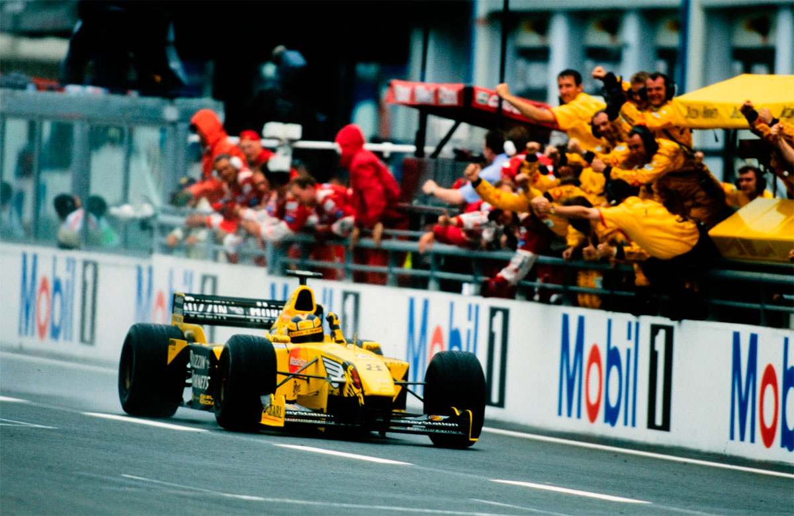
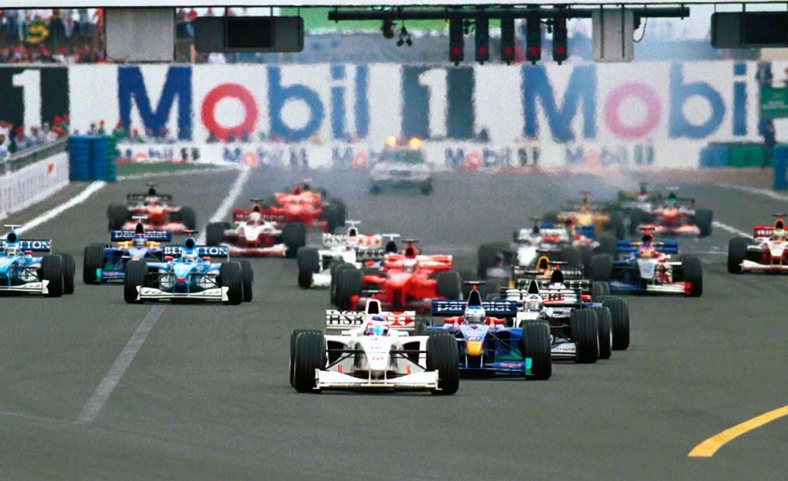
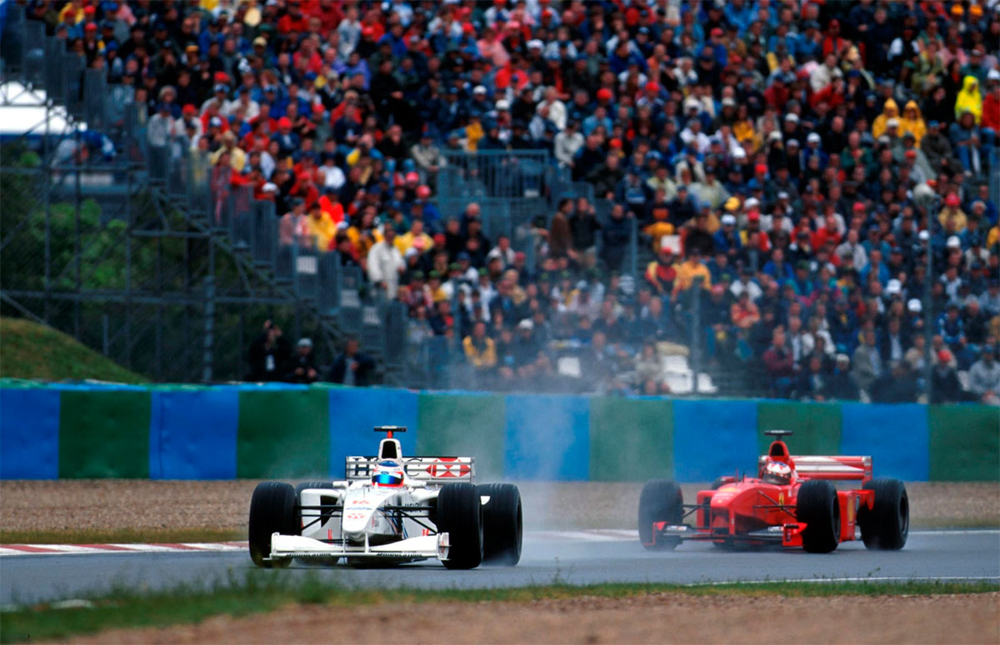
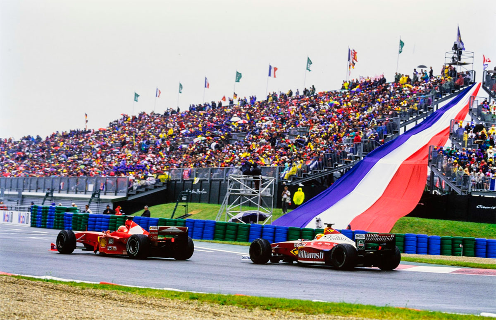
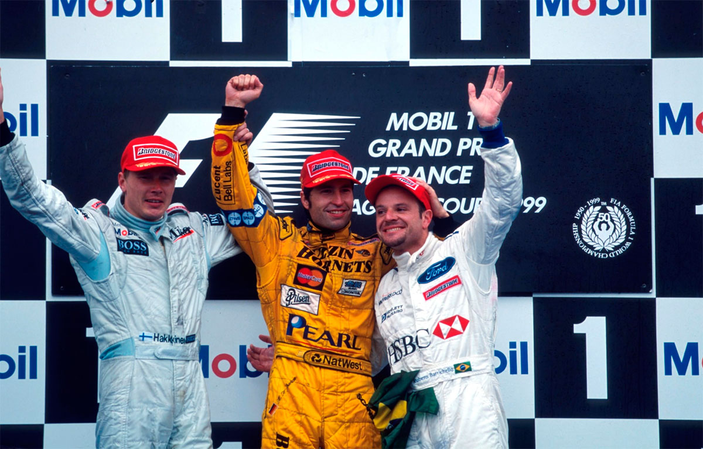

Magny-Cours - 27/06/1999
OS FILHOS DA CHUVA

EEm um fim de semana repleto de surpresas e chuva forte, Rubens Barrichello anteveu a tempestado e conquistou a pole position. Na corrida, Frentzen venceu com uma parada a menos. Hakkinen se recuperou da péssima posição no grid e terminou em segundo, Barrichello foi o terceiro e a corrida foi marcada por um grande número de pilotos que não conseguiram se manter na pista alagada.
Reginaldo Leme
GP da França não começou de um jeito normal, e só poderia acabar de uma maneira meio maluca, também. Os favoritos à vitória e ao título sucumbiram à chuva e a problemas mecânicos. No final, venceu Heinz-Harald Frentzen, o piloto que menos brilhou na corrida, mas aquele que adotou a tática mais eficiente em Magny-Cours. Já no sábado dava para perceber que a prova francesa seria cheia de surpresas. Rubens Barrichello e Jean Alesi foram os dois pilotos mais espertos do dia, previram que a chuva forte no início da classificação iria apertar e foram para a pista logo no início do treino. Dos dois, Rubinho, um especialista em pista molhada, foi o mais rápido. E assim ele conseguiu a segunda pole-position de sua carreira e a primeira de sua equipe, a Stewart. Alesi, da Sauber, ficou em segundo. Olivier Panis, da Prost, que andava meio sumidão, ficou com o terceiro lugar no grid. Os bichos-papões ficaram para trás. Michael Schumacher conseguiu a duras penas a sexta posição e Mika Hakkinen, a 14ª. Foi tudo uma questão de arriscar, e Rubinho e Alesi deram o tiro certo. O francês foi o primeiro a enfrentar o toró e logo em sua segunda volta fez o tempo de 1min38s881. “Quando vi no telão que o tempo dele era 1s5 melhor que o meu, decidi que minha segunda volta era a decisiva. Tinha de fazer a pole ali, porque a chuva estava aumentando”, contou Rubinho, antevendo a tempestade. O brasileiro conseguiu uma volta muito boa, quase rodou, mas baixou o tempo de Alesi em 0s440, com 9min54 de treino. Recolheu o carro para os boxes e ficou esperando. Desde 28 de agosto de 94 que um piloto brasileiro não conseguia uma pole-position. Na ocasião, o mesmo Barrichello ficou com o primeiro lugar no grid do GP da Bélgica, em Spa.

No dia seguinte, o clima instável foi mais uma vez determinante para o resultado final do GP francês. E ganhou o piloto menos brilhante num domingo de gala para a F-1. Frentzen foi um dos cinco pilotos que lideraram a corrida. E foi ele quem recebeu a bandeira quadriculada em primeiro, graças a uma estratégia desenhada pela dupla de engenheiros da Jordan, o australiano Sain Michaels e o inglês Mike Gascoyne. Hakkinen foi o segundo, ampliando sua liderança no Mundial para oito pontos sobre Schumacher, e Barrichello terminou na terceira colocação. Encher o tanque foi o segredo de Frentzen. Na 21ª volta da prova, começou a chover forte em Magny-Cours, como previa a meteorologia. Imediatamente todos os pilotos foram para os boxes colocar pneus “biscoito”. A parada de Frentzen foi mais longa que o normal. “Fiquei nervoso e comecei a gritar pelo rádio perguntando o que estava acontecendo. Quando voltei à pista, meu carro estava muito pesado e percebi que tinham colocado gasolina suficiente para não ter de parar mais”, contou o alemão. Seu carro ficou inguiável. “Tinha muita água e eu mal conseguia me manter na pista por causa do peso. Continuei gritando, pedindo para a equipe avisar a direção de prova que era preciso colocar o safety-car. Parece que eles ouviram.” De fato, na volta 25 o carro-madrinha deixou os boxes. Mesmo em velocidade baixa, cinco pilotos não conseguiram se manter na pista alagada: Alesi, Gené, Wurz,Villeneuve e Zanardi. A tempestade era assustadora.

Até ali, muita coisa já tinha acontecido. Rubinho largara bem, mas não resistiu à velocidade do McLaren de Coulthard, que passou Alesi logo no início e, na sexta volta, superou o brasileiro. Hakkinen, 14° no grid, já era o sétimo, passando quem aparecesse na sua frente. Coulthard chegou a abrir 7s6 de diferença para Barrichello, mas um problema elétrico cortou seu motor e ele foi obrigado a abandonar. Rubinho reassumiu a ponta e lá foi ficando, enquanto Hakkinen dava seu show lá atrás. Na décima volta, fez uma linda ultrapassagem sobre Schumacher e assumiu o quarto lugar. Depois, atropelou Frentzen. Na seqüência, deixou Alesi para trás. Foi quando começou a chover e o safety-car agrupou todo mundo após os pit stops. Chovia tanto que Barrichello chegou a fazer sinais pedindo para parar a corrida ao notar que o piloto do safety-car, o inglês Oliver Gavin, quase rodou duas vezes com o Mercedes-Benz prateado da FIA. Na volta 32, a água deu uma trégua. Schumacher, àquela altura em quarto e sem comunicação de rádio com a Ferrari, começou a sinalizar com as mãos querendo o reinicio da prova.

Na 35, a relargada. E o início de um dos mais belos duelos do GP, entre Barrichello e Hakkinen. Por três voltas o finlandês tentou, sempre na freada da curva Adelaide, a mais lenta da pista. Até que forçou demais, rodou e caiu para sétimo. Rubinho ia se mantendo na frente, mas já preocupado com Schumacher. O alemão passou por Frentzen, foi para segundo e começou mais uma batalha épica com Rubinho. Foram seis voltas de disputas lado a lado, até o alemão passar de vez e disparar na frente. Michael abriu 8s7 sobre Barrichello até a volta 50, mas na 51ª um piripaque no seu volante o deixou com apenas duas marchas, e ele foi obrigado a ir para os boxes trocar a direção. O novo adversário de Barrichello seria Hakkinen de novo, que fazia uma prova estupenda. Ele passou Frentzen mais uma vez, encostou no brasileiro e na 60ª volta assumiu a liderança pela primeira vez na corrida. Venceria, se não fosse o mesmo problema de Barrichello: a gasolina estava acabando. A sete voltas do final, ambos fizeram rápidos pit stops e voltaram para a pista. Frentzen, que não tinha tal preocupação, ganhou a ponta na volta 66 e assim foi até o final. Foi sua segunda vitória na F-1 e a segunda da Jordan. Schumacher, com o carro em pandarecos, ainda perdeu a posição para o irmão Ralf, que chegou em quarto, e só não terminou em sexto lugar porque Irvine não podia ultrapássa-lo, por contrato. “Pelo menos o Mika não ganhou”, consolou-se.
